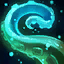
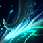
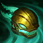
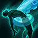
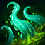

- Passive: Prophet of an Elder God
-
Illaoi and theVessels she creates spawn Tentacles on nearby impassible terrain. Tentacles swing at Spirits, Vessels, and victims of Illaoi's Harsh lesson. Tentacles deal physical damage to enemies hit.

- Q: Tenticale Smash
-
Illaoi is healed for a percentage of her missing health whenever a Tentacle damages an enemy champion. When activated, Illaoi smashes down a Tentacle that deals physical damage.

- W: Harsh Lesson
-
Illaoi leaps to her target, dealing physical damage and causing nearby Tentacles to also swing at the target.

- E: Test of Spirit
-
Illaoi rips the Spirit from a foe's body, forcing it to stand before her. Spirits echo a percentage of the damage they take to the original target. If killed, or if the target gets too far from the Spirit, the target will become a Vessel and begin spawning Tentacles.

- Ultimate: Leap of Faith
-
Illaoi smashes her idol into the ground, dealing physical damage to nearby enemies. A Tentacle spawns for each enemy champion hit.